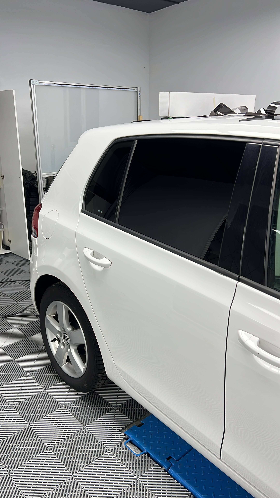
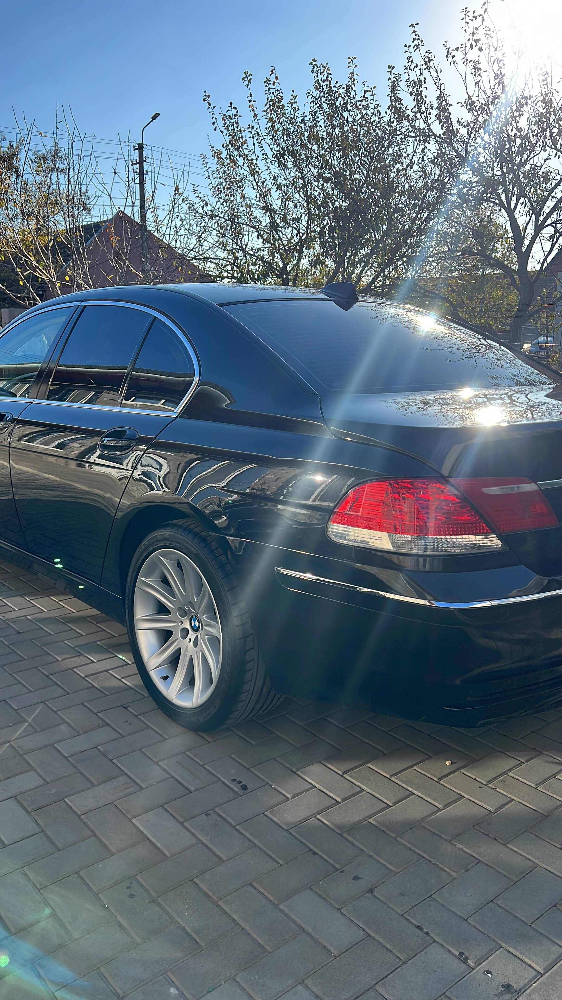
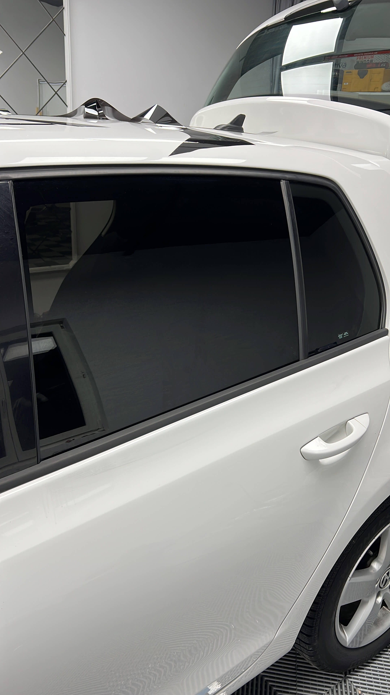
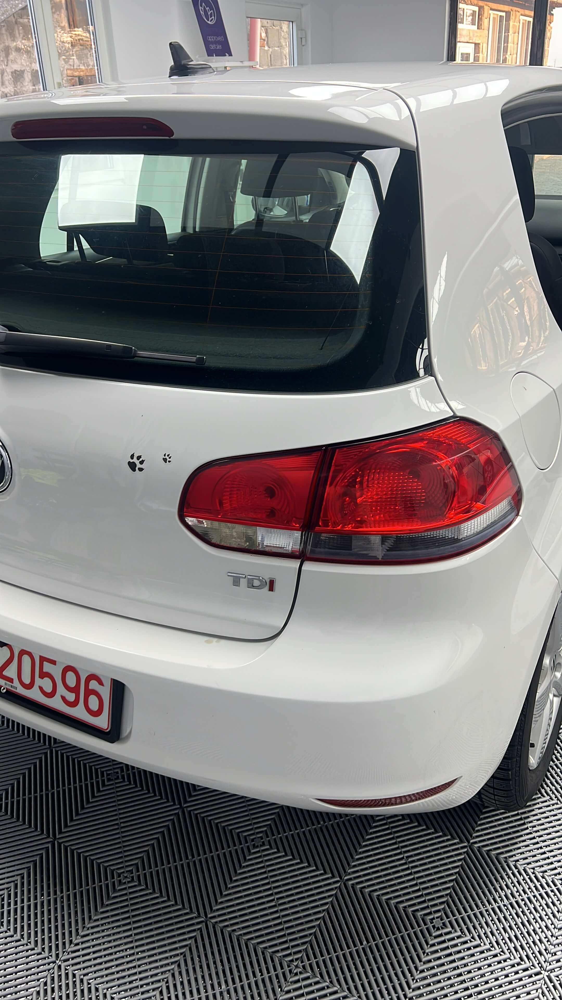
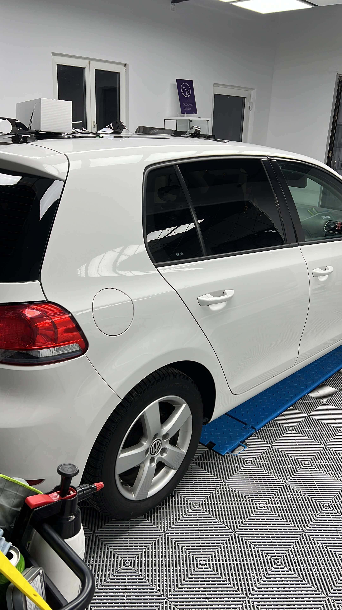
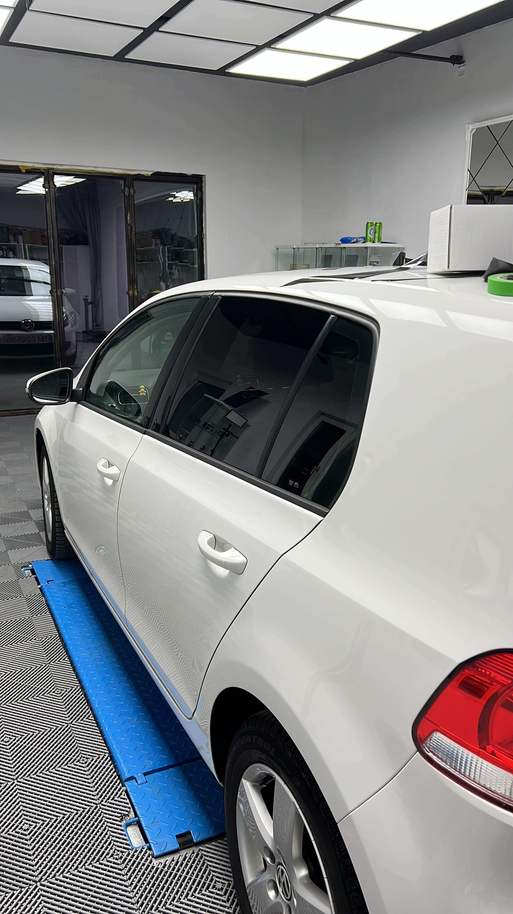
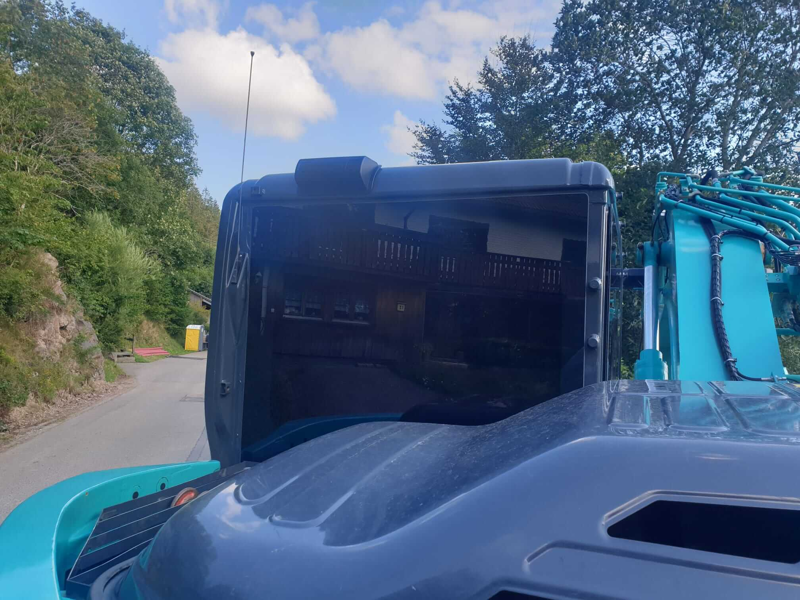

Aplicăm folie solară Global Window Films pe autoturisme, autoutilitare și utilaje agricole. Curățare minuțioasă, croire pe fiecare geam, modelare termică și finisare fără bule.



Habitaclul se încălzește mai puțin în soare, iar clima lucrează mai ușor.
Protejează pasagerii și încetinește decolorarea tapițeriei și a bordului.
Bunurile lăsate în mașină nu mai sunt la vedere.
Mașina arată mai unitar și mai elegant, fără efect de „folie lipită”.
Pe lângă autoturisme, aplicăm folie pe autoutilitare, excavatoare, tractoare și alte utilaje.
 Autoturisme
Autoturisme AutoutilitareUtilaje agricole & de construcții
AutoutilitareUtilaje agricole & de construcțiiAcelași proces pentru fiecare mașină, fie că e un Seria 7 sau un excavator.
Geamurile se curăță pe interior și exterior cu lamă specială și soluții degresante, până la o suprafață perfect curată.
Folia se taie după dimensiunea fiecărui geam, cu atenție la colțuri și muchii.
Cu pistolul cu aer cald, folia se modelează pe curbura exactă a geamului.
Cu soluție de apă și săpun și o racletă moale, eliminăm toate bulele de aer și excesul de lichid.
Verificăm fiecare geam. Folia se usucă complet în 24–48 de ore, în funcție de temperatură.








Aplicăm folie doar pe geamurile unde legislația din România o permite și vă explicăm înainte de lucrare ce variante aveți.
Pentru un autoturism, de obicei o zi. La autoutilitare și utilaje depinde de numărul și mărimea geamurilor.
După ce folia se usucă complet: 24–48 de ore, în funcție de temperatură.
Depinde de vehicul și de numărul de geamuri. Trimiteți-ne marca și modelul pe WhatsApp și primiți un preț clar.
Revenim cu preț și o dată disponibilă.